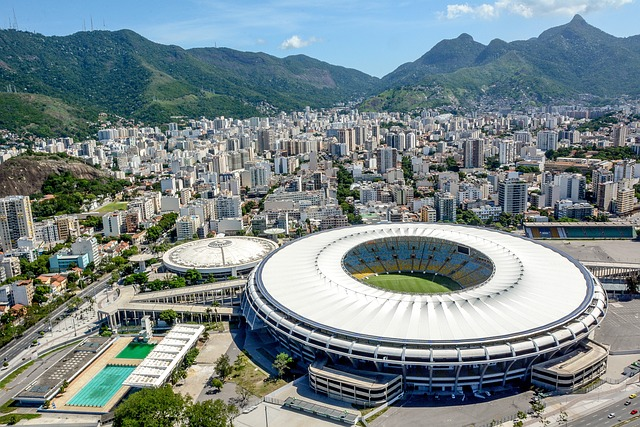

Maracanã

Fundado em 1950, o Maracanã já recebeu públicos de mais de 200 mil pessoas e foi palco de grandes partidas de futebol, shows musicais e outros eventos. O estádio mais importante do futebol brasileiro carrega parte da história do Rio de Janeiro e é também um dos principais pontos turísticos da cidade.
Como chegar?
A forma mais fácil de chegar no Maracanã é sem dúvidas o metrô, descendo na linha 2 estação Maracanã. Também possuem estas linhas de ônibus param perto do Maracanã: 2114, 433, 455, 457, 638, 665SVA, 665SVB.
O que fazer?
A visitação no Estádio do Maracanã está aberta diariamente. Desde a reabertura em 2021, só existe uma opção de ingresso e tour disponível, que é um tour chamado de “tour monitorado”.
Horário de funcionamento:
8h30 às 16h30